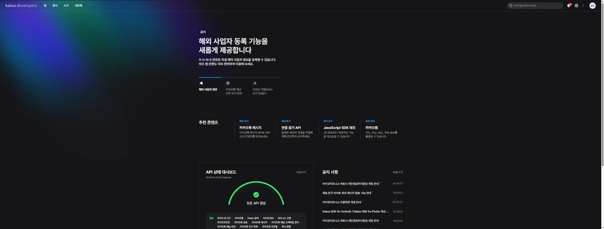
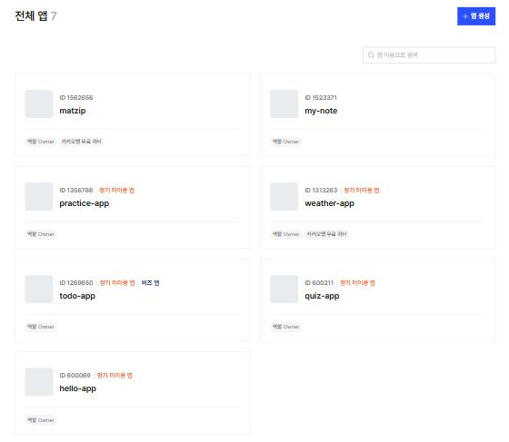
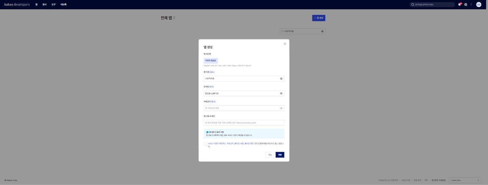
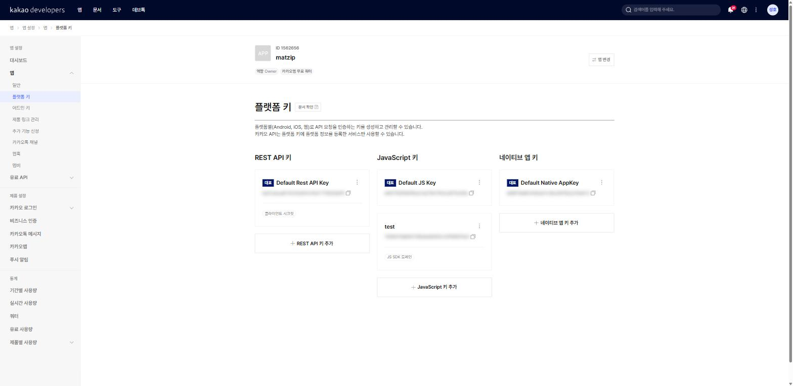
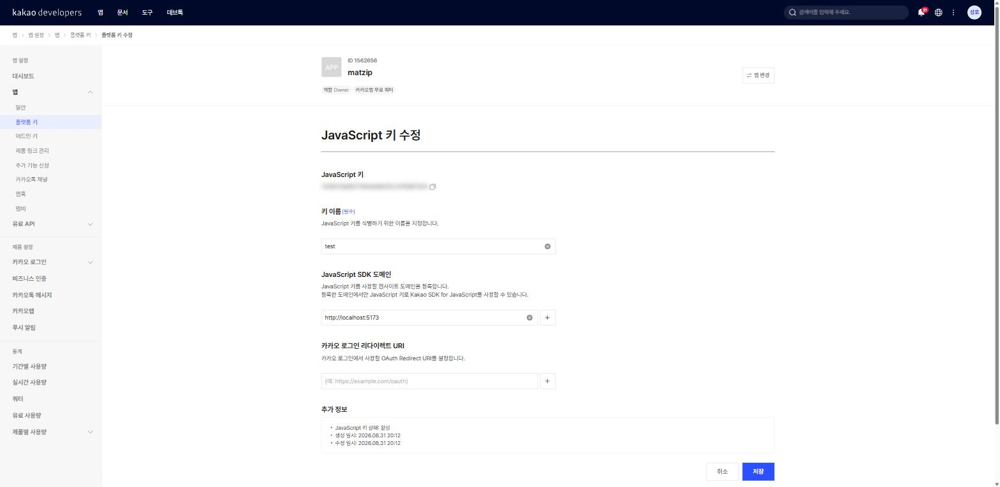
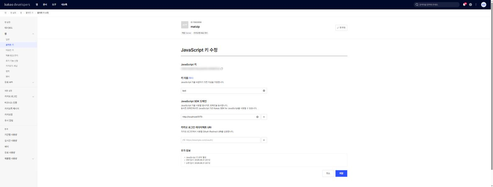

7장 카카오 개발자 계정과 앱 만들기¶
이 장에서 배우는 것
- API 키가 무엇이고 왜 필요한지 이해합니다
- developers.kakao.com에 개발자 계정을 만들고 애플리케이션(앱)을 생성합니다
- 플랫폼 키 3종(REST API·JavaScript·네이티브 앱) 가운데 JavaScript 키가 무엇인지, 어디에 쓰이는지 배웁니다
- JavaScript 키의 JavaScript SDK 도메인에
http://localhost:5173을 등록합니다 - 키를 공개하면 안 되는 이유와 "도메인 제한"의 의미를 배웁니다
드디어 2부입니다. 1부에서 우리는 바이브코딩에 필요한 도구들을 하나씩 설치했습니다. Node.js, Git, Claude Code, GitHub CLI, 그리고 Orca까지. 이제 공구함은 다 채워졌습니다. 남은 준비물은 딱 하나, 지도입니다.
우리가 만들 웹앱의 심장은 카카오지도입니다. 카카오맵 앱에서 보던 바로 그 지도를 우리 웹페이지 안에 끼워 넣을 수 있는데, 이걸 가능하게 해 주는 것이 카카오가 제공하는 지도 API1입니다. 그런데 카카오가 아무에게나 지도를 내주지는 않습니다. "당신 누구세요?"를 확인할 수 있는 열쇠를 요구하죠. 이번 장에서는 그 열쇠를 발급받습니다.
이번 장은 코드를 한 줄도 쓰지 않습니다. 그래서 Claude Code에게 시킬 일도 없습니다. 웹사이트 가입과 설정은 아직 사람이 직접 하는 편이 빠르고 안전한 영역이거든요. 마우스 클릭 몇 번이면 끝나는 쉬운 장이지만, 여기서 만드는 열쇠 하나가 8장부터 26장까지 책 전체를 관통합니다. 그리고 이 장의 마지막 절에서 다루는 "키 보안" 이야기는, 앞으로 여러분이 어떤 개발을 하든 평생 따라다닐 주제입니다. 천천히, 정확하게 따라와 주세요.
7.1 API 키 — 놀이공원 자유이용권¶
먼저 개념부터 잡고 갑시다. API 키란 무엇일까요?
놀이공원을 떠올려 보세요. 놀이공원의 놀이기구는 아무나 탈 수 없습니다. 입구에서 자유이용권을 사고, 손목에 밴드를 차야 합니다. 놀이기구 앞에 설 때마다 직원이 밴드를 확인하죠. "이 사람은 정당하게 입장한 손님이군" 하고요.
카카오지도 API도 똑같습니다. 카카오는 지도 서비스라는 거대한 놀이공원을 운영하고 있고, 우리는 그 놀이기구(지도 표시, 장소 검색, 마커 찍기)를 이용하려는 손님입니다. API 키는 손목 밴드입니다. 우리 웹페이지가 카카오 서버에 "지도 좀 보여주세요"라고 요청할 때마다 이 키를 함께 보내고, 카카오 서버는 키를 보고 "아, 등록된 개발자의 요청이구나" 하고 지도를 내어 줍니다.
키가 왜 필요할까요? 카카오 입장에서 생각해 보면 답이 나옵니다.
첫째, 누가 얼마나 쓰는지 알아야 합니다. 지도 데이터를 서버에서 내려보내는 데는 비용이 듭니다. 키가 있으면 "이 앱이 하루에 지도를 몇 번 불렀다"를 셀 수 있고, 과도한 사용을 제한할 수 있습니다.
둘째, 문제가 생겼을 때 연락할 수 있어야 합니다. 어떤 앱이 비정상적인 요청을 쏟아낸다면, 카카오는 키를 보고 어느 개발자의 앱인지 찾아 조치할 수 있습니다.
셋째, 개발자 입장에서도 보호 장치가 됩니다. 뒤에서 자세히 다루겠지만, 키에는 "이 키는 이 주소에서만 동작한다"는 제한을 걸 수 있어서, 남이 내 키를 함부로 가져다 쓰지 못하게 막을 수 있습니다.
정리하면 이렇습니다. 카카오 개발자 사이트에서 계정을 만들고 → 애플리케이션(앱)을 하나 등록하면 → 카카오가 그 앱에 키를 발급해 준다. 오늘 우리가 할 일의 전부입니다.
💡 팁
"앱"이라는 말에 겁먹지 마세요. 스마트폰 앱을 만들어서 스토어에 올리라는 뜻이 아닙니다. 카카오 개발자 사이트에서 말하는 애플리케이션은 그냥 "내 프로젝트 등록 카드" 한 장입니다. 이름 하나 정해서 등록하면 끝이고, 1분이면 만듭니다.
7.2 카카오 개발자 사이트 가입하기¶
이제 실제로 해 봅시다. 브라우저를 열고 주소창에 다음 주소를 입력하세요.
"카카오 디벨로퍼스(Kakao Developers)"라는 사이트가 열립니다. 카카오가 외부 개발자들에게 지도, 로그인, 메시지 같은 기능을 빌려주는 공식 창구입니다. 시간이 있다면 첫 화면을 잠깐 구경해 보세요. 카카오톡 메시지 보내기, 카카오로 로그인하기처럼 평소 다른 앱에서 봤던 기능들이 전부 여기서 출발한다는 사실을 알게 되면, 개발자 사이트가 조금은 친근하게 느껴질 겁니다.

그림 7.1 — 카카오 디벨로퍼스 첫 화면
화면 오른쪽 위의 로그인 버튼을 누르세요. 카카오 계정 로그인 화면이 나타납니다. 여기서 좋은 소식 하나. 카카오톡을 쓰고 있다면 이미 카카오 계정이 있습니다. 카카오톡에 연결된 이메일과 비밀번호로 그대로 로그인하면 됩니다. 별도의 "개발자 전용 회원가입" 절차는 없습니다.
카카오 계정이 없거나 새로 만들고 싶다면 로그인 화면의 회원가입 링크를 눌러 이메일 인증을 거쳐 계정을 만들 수 있습니다. 몇 분이면 충분합니다.
처음 로그인하면 개발자 사이트 이용을 위한 동의 화면이 나올 수 있습니다. 약관을 읽고 동의하면 여러분은 그 순간부터 "카카오 개발자"입니다. 자격증도 시험도 없습니다. 로그인 한 번이면 개발자가 되는 시대입니다.
⚠️ 주의
학교나 회사 컴퓨터처럼 여러 사람이 쓰는 PC라면, 실습이 끝난 뒤 꼭 로그아웃하세요. 개발자 계정에는 앞으로 발급받을 키가 들어 있어서, 남이 로그인된 화면을 보는 것만으로 키가 노출될 수 있습니다.
7.3 앱 생성하기¶
로그인이 됐으면 이제 개발자 콘솔로 들어갑니다. 첫 화면 상단 메뉴에서 콘솔(내 애플리케이션)을 찾아 누르거나, 주소창에 직접 다음 주소를 입력하세요.
전체 앱이라는 제목 아래에 앱 목록이 보입니다. 방금 가입했다면 텅 빈 목록이 보일 겁니다. 당연합니다. 아직 아무 앱도 만들지 않았으니까요.

그림 7.2 — 개발자 콘솔의 전체 앱 목록과 "앱 생성" 버튼
화면 오른쪽 위의 앱 생성 버튼을 누르세요. 앱 정보를 입력하는 창이 열립니다. 입력할 것은 많지 않습니다.
- 앱 이름 — 이 프로젝트의 이름입니다. 저는
나만의지도라고 지었습니다. 여러분은맛집지도,우리동네지도처럼 마음에 드는 이름을 자유롭게 쓰세요. 나중에 언제든 바꿀 수 있습니다. - 회사명(사업자명) — 회사가 아니어도 됩니다. 개인 개발자는 자기 이름이나 닉네임을 적으면 충분합니다.
- 카테고리 — 앱의 분류를 고르는 항목이 있다면 지도·위치와 관련된 것을 고르거나, 마땅한 게 없으면 기타를 골라도 실습에는 아무 지장이 없습니다.

그림 7.3 — 앱 생성 창에 앱 이름 입력
입력을 마치고 저장(생성) 버튼을 누르면, 전체 앱 목록에 방금 만든 앱이 한 줄로 나타납니다. 축하합니다. 여러분의 첫 애플리케이션이 등록됐습니다. 목록에서 앱 이름을 클릭하면 그 앱의 관리 화면으로 들어가는데, 왼쪽에 앱 설정, 대시보드, 앱, 유료 API, 제품 설정, 통계 같은 메뉴가 세로로 늘어서 있습니다. 앞으로 우리가 드나들 곳은 이 가운데 앱 메뉴 하나뿐이니, 나머지는 "이런 것도 있구나" 하고 눈도장만 찍어 두세요.
참고로 애플리케이션은 여러 개 만들 수 있습니다. 나중에 다른 프로젝트를 시작하면 그 프로젝트용 앱을 새로 하나 만들면 됩니다. 프로젝트마다 앱을 따로 두면 키도 설정도 분리되어 관리가 깔끔해집니다. 실수로 만든 앱은 앱 관리 화면 안에서 삭제할 수도 있으니, 잘못 만들었다고 당황할 필요는 없습니다.
💡 팁
앱 이름은 나중에 카카오 로그인 같은 기능을 붙일 때 사용자에게 보이기도 합니다. 지금은 우리만 보는 이름이니 부담 없이 짓되, 욕설이나 남의 상표(예: "카카오맵")는 피하세요. 운영 정책에 걸릴 수 있습니다.
7.4 플랫폼 키 3종 — 우리가 쓸 건 JavaScript 키¶
이제 열쇠를 보러 갑시다. 앱 관리 화면의 왼쪽 메뉴에서 앱을 펼치면 그 아래에 일반, 플랫폼 키, 어드민 키, 제품 링크 관리 같은 하위 메뉴가 보입니다. 이 중 플랫폼 키를 클릭하세요. "플랫폼별(Android, iOS, 웹)로 API 요청을 인증하는 키를 생성하고 관리"한다는 설명과 함께, 키들이 세 묶음으로 나뉘어 여러분을 기다리고 있습니다.

그림 7.4 — 앱 > 플랫폼 키 화면의 키 3종 (JavaScript 키에 강조 표시)
키가 세 종류나 되는 이유는, 카카오 기능을 어디에서 부르느냐에 따라 쓰는 열쇠가 다르기 때문입니다. 하나씩 살펴봅시다.
| 키 이름 | 어디서 쓰나 | 우리 책에서는 |
|---|---|---|
| REST API 키 | 서버에서 카카오 API를 부를 때 | 안 씁니다 |
| JavaScript 키 | 웹 브라우저에서 동작하는 웹페이지 | 이것만 씁니다! |
| 네이티브 앱 키 | 안드로이드·iOS 스마트폰 앱 | 안 씁니다 |
우리가 만드는 것은 브라우저에서 돌아가는 웹앱입니다. 그러니 우리의 열쇠는 JavaScript 키 하나입니다. 처음 앱을 만들면 각 묶음마다 기본 키가 하나씩 자동으로 만들어져 있습니다(JavaScript 키 묶음에는 "Default JS Key" 같은 이름으로요). 키 값은 대략 이런 모양의 32자리 문자열입니다.
물론 위 값은 이 책을 위한 가짜 키입니다. 여러분 화면에는 여러분만의 키가 표시됩니다. 키 옆의 복사 버튼을 누르면 클립보드로 복사됩니다. 지금 당장 어딘가 붙여 넣을 필요는 없습니다. 8장에서 프로젝트를 만들 때 이 화면으로 다시 돌아와 복사해 갈 것이니, "JavaScript 키가 여기 있다"는 위치만 기억해 두세요. 참고로 각 묶음의 + JavaScript 키 추가 같은 버튼으로 키를 여러 개 만들 수도 있지만, 우리는 기본 키 하나면 충분합니다.
혹시 "키를 어디 적어 놨는데 잃어버리면 어쩌지?" 하는 걱정이 든다면 안심하세요. 키는 외우는 물건이 아닙니다. 필요할 때마다 이 화면에 로그인해서 다시 보면 됩니다. 반대로 키가 어딘가에 유출된 것 같다면, 키를 새로 만들어 갈아 끼우고 이전 키를 삭제해 무효로 만들 수도 있습니다. 열쇠가 새면 자물쇠를 통째로 바꿀 수 있다는 뜻이니, 이 기능의 존재도 함께 기억해 두면 좋습니다.
⚠️ 주의
왼쪽 메뉴를 보면 플랫폼 키 아래에 어드민 키라는 별도 메뉴가 하나 더 있습니다. 어드민 키는 절대로 웹페이지나 GitHub에 올리면 안 됩니다. 이름 그대로 관리자용 마스터 키라서, 유출되면 앱 설정 전체가 남의 손에 넘어갈 수 있습니다. 이 책에서는 어드민 키를 쓸 일이 전혀 없으니, "건드리지 않는 키"로 기억해 두면 충분합니다.
7.5 JavaScript SDK 도메인 등록 — localhost:5173¶
키를 확인했으니 이제 끝... 이면 좋겠지만, 한 단계가 더 남았습니다. 그리고 이 단계가 초보자들이 가장 많이 빠뜨리는 단계입니다. 9장에서 지도가 안 뜨고 회색 화면만 보인다면 십중팔구 여기가 원인입니다.
카카오는 JavaScript 키를 내주면서 이렇게 묻습니다. "이 키를 어느 주소의 웹사이트에서 쓸 건가요?" 미리 등록된 주소에서 온 요청만 받아 주겠다는 뜻입니다. 결혼식장 입구의 하객 명단을 떠올리면 쉽습니다. 청첩장(키)을 들고 있어도 명단(등록 도메인)에 없는 사람은 들여보내지 않는 것이죠. 이 명단은 별도의 메뉴가 아니라 JavaScript 키 자체에 붙어 있습니다. 키마다 "이 키가 통하는 주소 목록"을 따로 갖는 구조입니다.
방금 보던 플랫폼 키 화면에서, JavaScript 키 묶음의 기본 키(Default JS Key)를 클릭하세요. JavaScript 키 수정 화면이 열립니다. 위에서부터 ① 키 값(복사 버튼 포함), ② 키 이름, ③ JavaScript SDK 도메인, ④ 카카오 로그인 리다이렉트 URI 순으로 항목이 늘어서 있습니다. ④는 카카오 로그인용이라 이 책에서는 쓰지 않고, 우리의 목적지는 ③입니다. 설명문에 적힌 그대로입니다 — "JavaScript 키를 사용할 웹사이트 도메인을 등록합니다. 등록한 도메인에서만 JavaScript 키로 Kakao SDK for JavaScript를 사용할 수 있습니다."

그림 7.5 — JavaScript 키 수정 화면의 JavaScript SDK 도메인 항목
JavaScript SDK 도메인 입력란에 다음 주소를 정확히 입력하세요.
여기서 규칙 하나를 정확히 알아 둡시다. 호스트와 포트는 등록한 값과 정확히 일치해야 합니다 — 카카오 입장에서 localhost:5173과 localhost:5174는 서로 다른 주소입니다. 다만 프로토콜만은 예외라서, http와 https 중 하나만 등록해도 양쪽 모두 인정됩니다. 우리는 개발 서버 주소 그대로 http://localhost:5173으로 적습니다. 입력했으면 옆의 + 버튼으로 목록에 추가하고, 화면 아래의 저장 버튼까지 눌러야 반영됩니다.

그림 7.6 — JavaScript SDK 도메인에 http://localhost:5173 이 등록된 모습
그런데 이 이상한 주소는 대체 뭘까요? 미리 살짝 설명해 두겠습니다.
- localhost는 "내 컴퓨터 자신"을 가리키는 특별한 주소입니다. 인터넷 어딘가의 서버가 아니라, 지금 여러분이 쓰고 있는 바로 그 PC를 뜻합니다.
- 5173은 포트 번호2입니다. 한 컴퓨터 안에서도 여러 프로그램이 동시에 통신을 하는데, 서로 헷갈리지 않도록 프로그램마다 다른 번호의 창구를 씁니다. 다음 장에서 설치할 개발 도구 Vite가 개발용 서버를 열 때 기본으로 사용하는 창구 번호가 5173입니다.
즉 http://localhost:5173은 "내 컴퓨터에서 Vite로 돌리는 개발 중인 웹페이지"의 주소입니다. 8장에서 프로젝트를 만들고 개발 서버를 켜면, 브라우저 주소창에 정확히 이 주소가 뜨는 것을 보게 됩니다. 그 페이지에서 카카오지도를 불러야 하니, 카카오에게 미리 "이 주소에서 요청이 갈 거예요"라고 신고해 두는 것입니다.
먼 훗날(사실 25장이면 옵니다) 완성된 지도를 GitHub Pages로 인터넷에 공개할 때는, 그 공개 주소를 여기에 추가로 등록하게 됩니다. 도메인은 여러 개 등록할 수 있으니 걱정 마세요.
💡 팁
JavaScript SDK 도메인은 기본적으로 최대 10개까지 등록할 수 있고, *.example.com 같은 와일드카드 서브도메인 등록도 지원됩니다. 개발·스테이징·운영 주소를 여럿 추가하다 한도에 막히면 이 숫자를 떠올리세요.
💡 팁
나중에 지도가 안 뜨면서 브라우저 개발자도구 콘솔에 401이나 403 같은 숫자가 찍힌다면, 가장 먼저 이 JavaScript 키 수정 화면으로 돌아와 SDK 도메인이 정확히 등록됐는지 확인하세요. 포트 번호 오타(5173↔5174), 호스트 철자, 마지막의 불필요한 슬래시(/)가 3대 범인입니다(프로토콜은 하나만 등록해도 양쪽에서 인정되니 범인 목록에서 빠집니다). 트러블슈팅 전체 목록은 부록 B에 정리되어 있습니다.
7.6 키를 공개하면 안 되는 이유, 그리고 도메인 제한의 의미¶
여기서 자연스러운 의문이 하나 생깁니다. 잠깐만요, JavaScript 키는 웹페이지에서 쓰는 키라면서요? 웹페이지의 코드는 브라우저에서 "페이지 소스 보기"만 눌러도 누구나 볼 수 있잖아요. 그럼 키가 어차피 공개되는 것 아닌가요?
날카로운 질문입니다. 맞습니다. JavaScript 키는 구조적으로 브라우저에 노출될 수밖에 없습니다. 카카오도 그걸 알고 있습니다. 그래서 준비한 안전장치가 바로 방금 우리가 설정한 도메인 제한입니다.
⚠️ 키 보안 — 도메인 제한이 지켜주는 것
카카오 서버는 지도 요청을 받을 때 키와 함께 요청이 출발한 웹페이지의 주소를 확인합니다. 키가 맞더라도, 출발지 주소가 그 앱에 등록된 도메인 목록에 없으면 요청을 거절합니다.
누군가 여러분의 JavaScript 키를 복사해서 자기 사이트 evil-site.com에 붙여 넣어도, evil-site.com은 여러분 앱의 등록 도메인이 아니므로 지도가 뜨지 않습니다. 열쇠를 훔쳐 가도 등록된 문에서만 돌아가는 열쇠인 셈입니다. 이것이 도메인 제한의 의미이자, 브라우저에 노출되는 키가 그럭저럭 안전할 수 있는 이유입니다.
그렇다면 "도메인 제한이 있으니 키를 아무 데나 올려도 되겠네?"라고 생각할 수 있는데, 그건 또 아닙니다. 두 가지 이유가 있습니다.
첫째, 모든 키가 도메인의 보호를 받는 건 아닙니다. 도메인 제한은 JavaScript 키 이야기입니다. REST API 키나 어드민 키는 성격이 달라서, 유출되면 실제 피해로 이어질 수 있습니다. "이 키는 괜찮고 저 키는 위험하고"를 매번 따지는 것보다, "키라는 물건은 원래 공개하지 않는다"는 습관 하나를 몸에 붙이는 편이 훨씬 안전합니다.
둘째, 습관은 옮겨 갑니다. 여러분은 앞으로 카카오 말고도 수많은 API 키를 다루게 될 겁니다. 그중에는 유출되는 순간 요금 폭탄이 떨어지는 키(예: 유료 AI API 키)도 있습니다. 첫 키부터 "키는 코드와 분리해서 보관한다"를 연습해 두면, 나중에 진짜 위험한 키 앞에서도 손이 알아서 움직입니다.
그래서 다음 장에서 우리는 키를 코드에 직접 적지 않고 .env라는 비밀 보관용 파일에 넣은 뒤, 그 파일은 GitHub에 올라가지 않게 막는 방법을 배웁니다. 본문에서는 앞으로 키가 필요한 자리마다 여러분의 JS 키라고 쓰거나 0123abcd... 같은 가짜 키로 표기할 테니, 그 자리에 자기 키를 넣으면 됩니다.
🗣 이렇게 물어보세요
카카오 JavaScript 키는 어차피 브라우저에 노출된다는데, 그럼 .env에 숨기는 건 무슨 의미가 있어? 초보자한테 설명하듯 알려줘.
개념이 헷갈릴 때 Claude Code는 훌륭한 과외 선생님이 됩니다. 설치·설정 단계에서도 궁금한 것을 그때그때 물어보는 습관을 들이세요. 참고로 위 질문의 답은 "노출 자체를 막는다기보다, 코드와 설정을 분리해 관리하고 위험한 키까지 아우르는 안전 습관을 만드는 것"입니다. 여러분이 받은 답과 비교해 보세요.
7.7 마무리¶
이번 장에서 우리는 코드 한 줄 없이, 그러나 책 전체에서 가장 중요한 준비물 하나를 손에 넣었습니다. 카카오 개발자 계정을 만들고, 앱을 생성하고, 플랫폼 키 화면에서 JavaScript 키의 위치를 확인했으며, 그 키의 JavaScript SDK 도메인에 http://localhost:5173을 등록했습니다.
떠나기 전에 마지막 점검입니다. 전체 앱 목록에 앱이 보이나요? 앱 > 플랫폼 키 화면에서 JavaScript 키를 찾을 수 있나요? JavaScript 키 수정 화면의 SDK 도메인에 http://localhost:5173이 오타 없이 등록되어 있나요? 세 가지 모두 "네"라면 완벽합니다. 열쇠는 준비됐습니다. 이제 이 열쇠로 열 문, 즉 우리의 프로젝트를 만들 차례입니다.
📌 핵심 요약
- API 키는 카카오 서버에 "등록된 개발자의 요청"임을 증명하는 열쇠입니다.
- developers.kakao.com은 카카오 계정만 있으면 바로 가입(로그인)할 수 있습니다.
- 개발자 콘솔(developers.kakao.com/console/app)의 전체 앱 → + 앱 생성으로 앱을 만들면 앱 > 플랫폼 키에 REST API·JavaScript·네이티브 앱 키 3종이 준비됩니다.
- 웹앱인 우리 프로젝트가 쓰는 키는 JavaScript 키 하나입니다. 별도 메뉴의 어드민 키는 절대 노출 금지입니다.
- JavaScript 키를 클릭해 JavaScript SDK 도메인에
http://localhost:5173을 등록해야 개발 중인 페이지에서 지도를 부를 수 있습니다. - 도메인 제한 덕분에 JS 키는 등록된 주소에서만 동작하지만, "키는 공개하지 않는다"는 습관을 처음부터 들입니다.
🤔 생각해보기
Q1. 누군가 여러분의 JavaScript 키를 훔쳐 자기 웹사이트에 붙여 넣었습니다. 그 사이트에서 지도가 뜰까요? 이유와 함께 적어 보세요.
✍️ ________
✍️ ________
Q2. http://localhost:5173에서 localhost와 5173은 각각 무엇을 뜻할까요?
✍️ ________
✍️ ________
✏️ 연습 문제
- 플랫폼 키 3종(REST API 키, JavaScript 키, 네이티브 앱 키)과 어드민 키의 용도를 한 줄씩 적어 보세요.
- 앱 > 플랫폼 키 화면에서 여러분의 JavaScript 키를 찾아, 앞 4글자만 종이에 적어 보세요. (전체를 적어 두면 종이가 유출 경로가 됩니다!)
- JavaScript 키 수정 화면의 SDK 도메인 목록에
http://localhost:5173이 정확히 등록됐는지 확인하고, 포트 번호가5173이 맞는지·끝에 불필요한/가 붙어 있지는 않은지 점검해 보세요.
🔎 더 찾아보기
카카오 디벨로퍼스 문서— developers.kakao.com의 "문서" 메뉴. 지도 API의 공식 설명서가 모여 있습니다.쿼터(Quota)— API를 하루에 몇 번까지 부를 수 있는지 정한 사용량 한도. 카카오지도의 무료 한도를 검색해 보세요.OAuth— "카카오로 로그인" 버튼을 만들 때 쓰는 인증 방식. 이 책 범위 밖이지만 같은 콘솔에서 설정합니다.
다음 장 예고 — 열쇠를 손에 쥐었으니 이제 집을 지을 차례입니다. 8장에서는 Claude Code에게 시켜 Vite로 프로젝트의 뼈대를 만들고, 개발 서버를 켜서 브라우저에
http://localhost:5173이 진짜로 뜨는 것을 확인합니다. 그리고 오늘 발급받은 JavaScript 키를.env파일에 안전하게 숨기는 방법을 배웁니다.